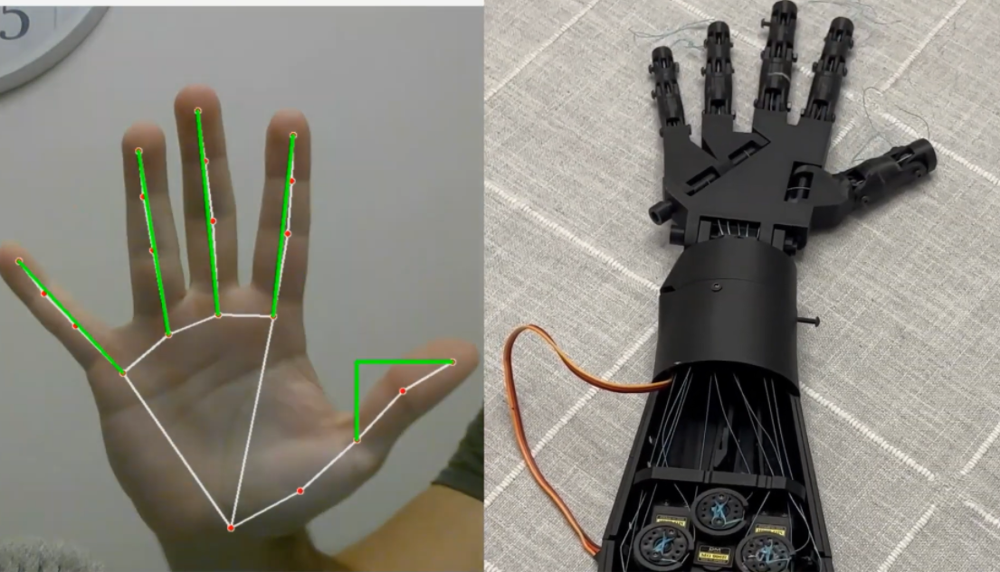
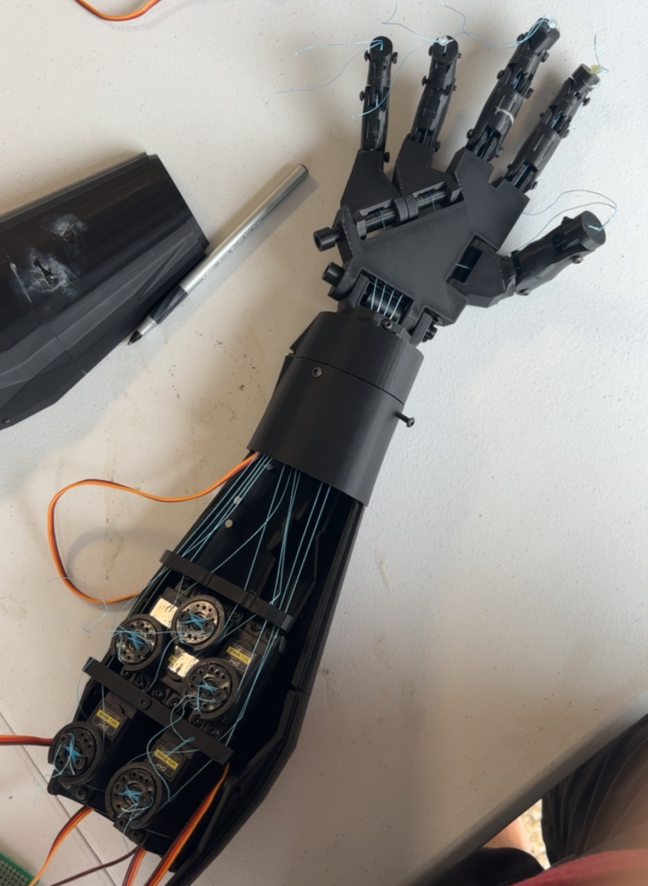
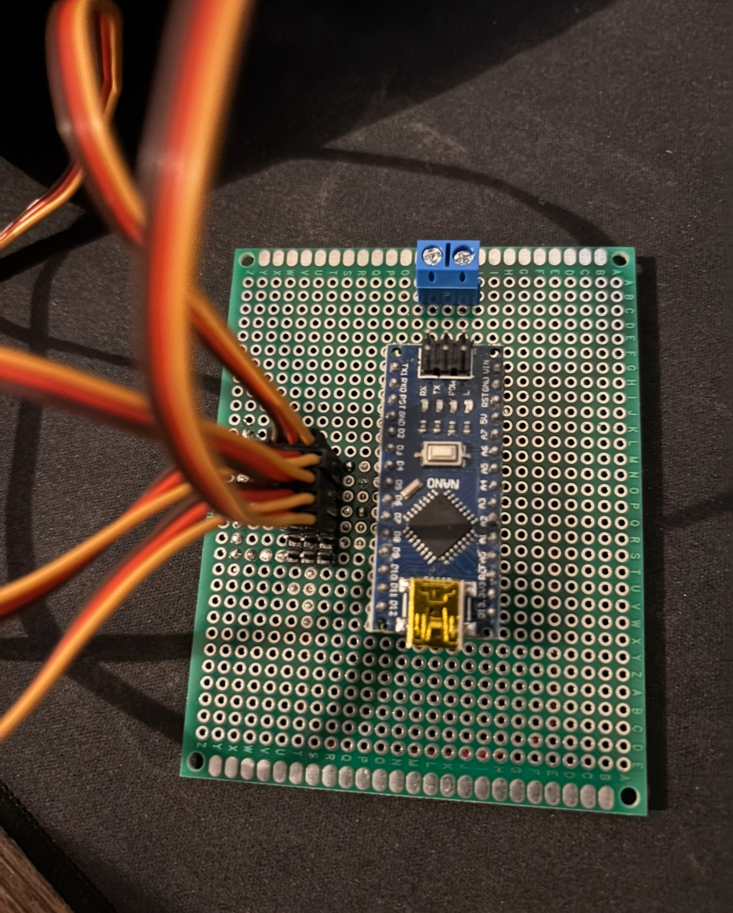

A low-cost prosthetic hand that utilizes camera-based hand recognition and Arduino to mimic hand movement in real time.

This project explores a low-cost approach to traditional prosthetics by using a standard webcam and 3D-printed parts. With OpenCV and MediaPipe, this prosthetic leverages computer vision to track hand landmarks in realtime and translates gestures to actuate servo motors controlling each finger. This approach eliminates the need for flex sensors or wearable gloves, providing a more cost-effective solution to gesture recognition.
The physical hand is an open source 3D printed model from InMoov, driven by five MG996R servo motors connected to an Arduino Nano. Each servo connects to a finger via fishing line threaded through the finger joints. When the servo rotates, it pulls the line and curls the finger. This mechanical approach keeps the build low-cost while still achieving a realistic range of motion.
OpenCV captures the live webcam feed frame by frame and passes each frame to MediaPipe's hand landmark model, which returns the XYZ coordinates of 21 hand landmarks in real time. For each finger, I extract two key landmarks: the fingertip and the base knuckle where the finger meets the palm.
To determine how open or closed each finger is, I calculate the Euclidean pixel distance between those two points:
A longer distance means the finger is extended; a shorter distance means it is curling closed. This distance is then mapped to a servo angle using a linear function. After testing, a multiplier of 40 produced a full and natural range of motion:
One edge case required special handling: when a finger is fully closed, the tip landmark drops below the base landmark in screen coordinates, meaning its Y value is greater than the base's Y value. A simple conditional catches this and writes the servo directly to its maximum angle of 180 degrees, preventing jitter at the extremes of motion.
The thumb uses a slightly different approach. Because it moves along a different axis than the other fingers (side to side), the distance measurement uses a right triangle constructed from the tip and base coordinates rather than a straight line.
The project is organized into three files, each with a clear responsibility:
write(angle) method for each motorisThumb flag to handle the alternate distance calculationCommunication between Python and the Arduino is handled by PyFirmata2, which sends servo angles over USB serial without requiring custom firmware on the Arduino side.


Building this project exposed two fundamental constraints of the camera-only approach that I want to address in future iterations.
The current servo mapping assumes a fixed relationship between tip-to-base pixel distance and finger state. In practice, people have different finger proportions, so the same physical gesture produces different distance measurements depending on the user. A future version needs an adaptive function that normalizes distances relative to each individual's hand geometry.
A single camera has no sense of depth, which means the measured tip-to-base distance changes as the hand moves toward or away from the lens, even if the fingers themselves haven't moved. This creates false servo actuation whenever the user shifts their hand in space. Replacing the webcam with a stereo camera setup would provide real depth data from hand position in the frame.
The longer term direction for this project is to move away from camera based input entirely and integrate EMG sensors that read electrical signals directly from the user's arm muscles. Each movement produces a distinct signal pattern, and by training a machine learning model on labeled EMG recordings, the prosthetic could predict intended gestures and actuate accordingly, enabling far more natural control than any vision-based approach can offer.